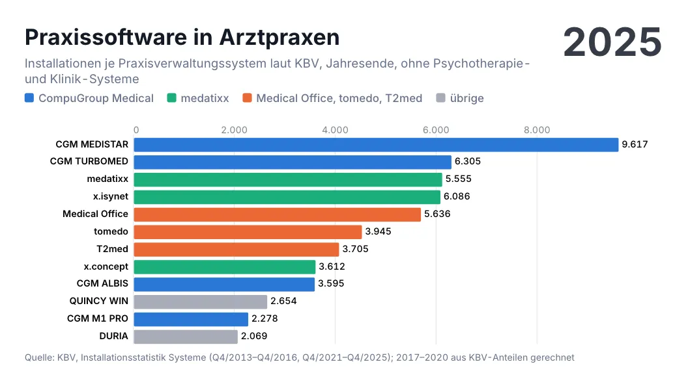

Arztpraxen, Praxissoftware und Gesundheits-IT in Zahlen
Welche Software steuert die Arzt- und Psychotherapiepraxen in Deutschland, wer stellt sie her, und wie gut sprechen die Systeme miteinander? Jeder Artikel beantwortet eine Frage mit Zahl, Jahr und Quelle, zeigt die Entwicklung als animierte Grafik und sagt, was die Zahl nicht sagt.
- 9.617 Installationen von CGM MEDISTAR, Platz 1 der Arztsysteme 2025
- 22.070 Installationen der CGM-Systeme in Arztpraxen 2025
- 10.967 Installationen von Elefant, meistinstalliertes System 2025
- 4.530 Installationen von tomedo, 2013 noch 7 2025
- 95,8 % der Installationen mit LDT-Befund-Import 2026
- 5.305 Medizinische Versorgungszentren, 2004 noch 70 2025
- 88,5 % der Laborärztinnen und -ärzte angestellt 2025
Praxissoftware in Arztpraxen: Marktanteile seit 2013
CGM MEDISTAR führt mit 9.617 Installationen. Doch CGM fällt von 50 auf 32 Prozent der Arztsysteme, Medical Office, tomedo und T2med wachsen.


Zuletzt erschienen
- eArztbrief über KIM: 45,2 Millionen im Jahr 2025
- Praxissoftware der Allgemeinmediziner: medatixx vorn
- Laborärzte: 88,5 Prozent angestellt, kaum noch Praxen
- Praxissoftware wechseln: Gewinner und Verlierer seit 2021
- Psychotherapie-Software: Elefant vor MEDISTAR
Themen
- Die Praxissoftware · 5 Artikel
Über hundert Systeme sind zugelassen, eine Handvoll teilt sich den Markt. - Die Hersteller · 1 Artikel
Wer die Systeme besitzt, ist eine andere Frage als welches System führt. - Die Schnittstellen · 3 Artikel
Zugelassen heißt nicht vernetzt: was die Systeme nachweislich austauschen können. - Die Praxen · 3 Artikel
Wer die Praxen betreibt, verändert, welche Software sie brauchen. - Praxisverwaltungssysteme in Deutschland
Alle Systeme mit Installationen laut KBV, nach Hersteller, mit den Schnittstellen-Zulassungen je System.
Eigene Daten animieren
Jede Grafik dieser Seite entsteht im Studio: eine Tabelle hinein, ein MP4-Video heraus, als Bar Race, Line Race oder animierte Karte. Es läuft vollständig im Browser, die Daten verlassen das Gerät nicht. Am bequemsten am Rechner.
Häufige Fragen
Welche Praxissoftware nutzen Arztpraxen am häufigsten?
Unter den Systemen für ärztliche Praxen führt CGM MEDISTAR mit 9.617 Installationen Ende 2025, vor CGM TURBOMED mit 6.305 und medatixx mit 6.121. Gezählt sind Installationen in der Statistik der Kassenärztlichen Bundesvereinigung, nicht Praxen. Mehr im Artikel Praxissoftware in Arztpraxen: Marktanteile seit 2013.
Welcher Hersteller hat den größten Marktanteil bei Praxissoftware?
CompuGroup Medical mit 22.070 Installationen in fünf Systemen, 32,4 Prozent der Installationen ärztlicher Systeme Ende 2025; 2013 waren es 50,2 Prozent. Dahinter liegt medatixx mit 28,1 Prozent. Mehr im Artikel Praxissoftware-Hersteller: CGM, medatixx und die Neuen.
Welche Praxissoftware nutzen Psychotherapeuten?
Am häufigsten Elefant mit 10.967 und psyprax mit 10.519 Installationen Ende 2025, danach Epikur, SMARTY und PsychoDat. Elefant ist seit Ende 2023 das meistinstallierte System der KBV-Statistik. Mehr im Artikel Psychotherapie-Software: Elefant vor MEDISTAR.
Welche Praxissoftware wächst am stärksten?
tomedo und T2med: 2025 plus 34,8 und 22,4 Prozent, Ende 2025 mit 4.530 und 4.078 Installationen. tomedo hatte Ende 2013 sieben Installationen, T2med kam 2015 auf den Markt. Mehr im Artikel Praxissoftware-Aufsteiger: tomedo, T2med und Co..
Welche Praxissoftware verliert Kunden?
Zwischen Ende 2021 und Ende 2025 verloren CGM TURBOMED 3.385 und CGM MEDISTAR 2.375 Installationen. Am meisten gewannen das neue medatixx mit 3.654 und tomedo mit 2.872. Mehr im Artikel Praxissoftware wechseln: Gewinner und Verlierer seit 2021.
Welche Praxissoftware kann LDT 3?
Für den Import von Laborbefunden nach LDT 3 sind Systeme mit 95,8 Prozent der Installationen ärztlicher Systeme zugelassen. Einen zertifizierten Export des Laborauftrags hat kein ärztliches Praxissystem. Mehr im Artikel Labordaten in der Arztpraxis: LDT-Befunde ja, Aufträge kaum.
Wie viele eArztbriefe werden in Deutschland verschickt?
Über KIM 45,2 Millionen im Jahr 2025 und 46,8 Millionen von Januar bis Oktober 2026, laut TI-Dashboard der gematik. Briefe per Fax oder Post sind darin nicht enthalten. Mehr im Artikel eArztbrief über KIM: 45,2 Millionen im Jahr 2025.
Wie viele MVZ gibt es in Deutschland?
5.305 Ende 2025, 2004 waren es 70. 2.659 davon haben ein Krankenhaus als Träger, und 94,7 Prozent der dort Tätigen sind angestellt. Mehr im Artikel MVZ wachsen, ärztliche Einzelpraxen schrumpfen.
Mit welcher Software rechnen Krankenhäuser ambulant ab?
Vor allem mit ORBIS, SAP, CGM MEDICO und iMedOne, zusammen 7.948 Installationen Ende 2025. Für das SAP-Modul endet die Wartung spätestens Ende 2030. Mehr im Artikel Krankenhaus-Software in der ambulanten Abrechnung.
Zeigt die KBV-Statistik Marktanteile von Praxissoftware?
Nur näherungsweise: Sie zählt Abrechnungen mit der Prüfnummer eines Systems, Ende 2025 116.954, bei rund 98.000 Praxen. Ein MVZ zählt wie eine Einzelpraxis. Mehr im Artikel Wer zählt die Praxissoftware? Die KBV-Statistik erklärt.
Sind Laborärzte angestellt oder selbstständig?
Ende 2025 waren 88,5 Prozent der Laborärztinnen und -ärzte in der Kassenversorgung angestellt, fast alle im MVZ; 2013 waren es 68,0 Prozent. Mehr im Artikel Laborärzte: 88,5 Prozent angestellt, kaum noch Praxen.
Wer hier schreibt
Thomas Freimoser, Geschäftsführer der FleXChange Medical GmbH. FleXChange verbindet Praxisverwaltungssysteme mit E-Health-Anwendungen, ist also selbst Teil des Marktes, über den diese Seite schreibt. Deshalb gilt hier dieselbe Regel wie auf der Schwesterseite: veröffentlichte Statistiken, nachgelesen an der Quelle, mit offener Methode. Was gerechnet ist, steht dabei.